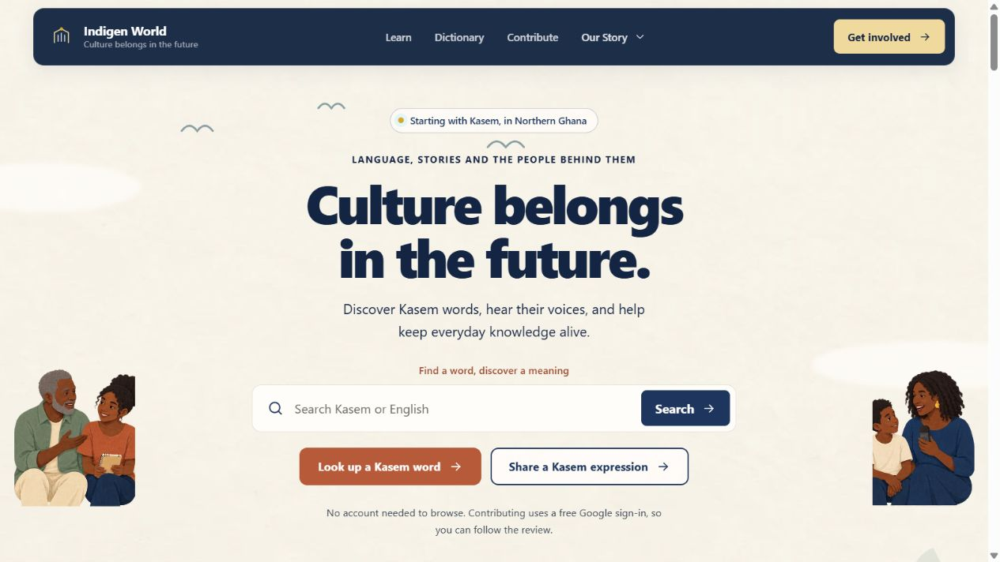
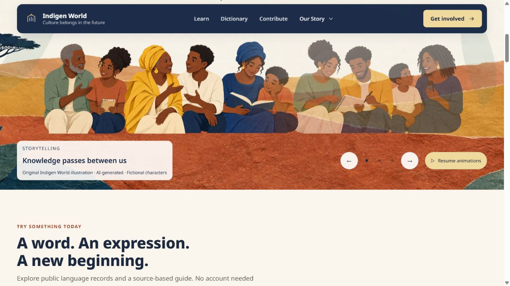
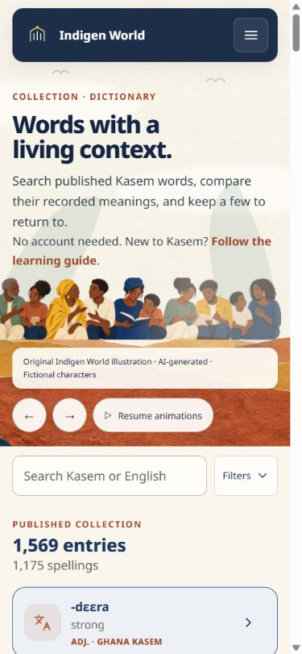

Language grows through people: someone telling a story, a child reading alongside an adult, or friends recording what they know. Indigen World's public website brings that idea into its illustrated banners.

Ten original characters appear across the banners and homepage story cards. The same people return in three scenes: storytelling, learning together and creating together. Warm paper textures, terracotta hills and sage leaves give the pages a consistent setting.

Clouds, birds and leaves drift gently while the character layer moves slightly and different groups come into focus. Headings, search and action buttons remain in their own space. Dictionary, Learn and Contribute keep compact openings.
Use the arrows or scene buttons to choose a scene. Selecting a scene pauses the animation so you can keep looking at it. Use Pause animations or Resume animations to change the shared setting; your choice carries into other pages and the spelling and grammar guides. The banner also rests while you hover, focus its controls, scroll it out of view or switch tabs. Devices requesting reduced motion receive a still presentation.

The people and scenery were created for this website and are visibly credited as AI-generated illustrations. They do not identify real speakers or imply participation by pictured individuals. The broad paper-collage approach inspired the design; no Endangered Languages Project characters, pictures or video were reused.
Explore indigenworld.com. This update concerns the public website and its reference guides. Mobile apps and signed-in workspaces follow their own release schedules.